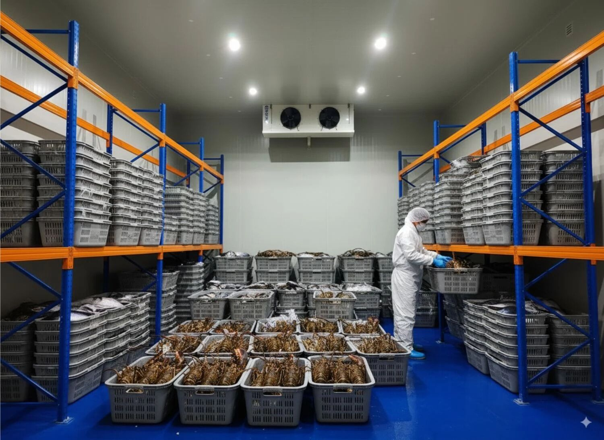

Cold Storage Refrigeration System Modernization for a Large Hospitality Facility
| Client | Leading Hospitality & Food Service Group, Qatar |
|---|---|
| Industry | Hospitality & Commercial Refrigeration |
Q Ventus was appointed to modernize the refrigeration infrastructure of a large commercial food storage facility supporting multiple hospitality outlets. The existing freezer rooms had become increasingly unreliable due to ageing refrigeration equipment, resulting in unstable storage temperatures and increasing the risk of product loss. The objective was to engineer a long-term refrigeration solution that would restore system reliability while ensuring uninterrupted operation of the client's food supply chain throughout the project.

The facility consisted of multiple commercial freezer rooms operating continuously. An engineering assessment identified several critical issues:
- Ageing 3 HP condensing units operating beyond their reliable service life.
- Declining refrigeration capacity causing unstable freezer temperatures.
- Temperature fluctuations compromising food storage conditions.
- Damaged insulated freezer doors from failed anti-condensation door heater systems.
- Faulty pressure relief valves affecting door operation and chamber pressure equalization.
- Growing risk of refrigeration failure during peak operating periods.
Prolonged shutdowns were not acceptable due to continuous food storage requirements.
Following a detailed site survey and system evaluation, Q Ventus developed a phased replacement strategy to eliminate operational downtime:
- Replacement of six 3 HP commercial condensing units.
- Installation of six new evaporator units across the North and South freezer facilities.
- Refrigerant piping modifications and system integration.
- Repair and restoration of damaged insulated freezer doors.
- Replacement and calibration of electric door heater systems.
- Repair and servicing of pressure relief valves.
- System testing, balancing and commissioning.
The first two systems were commissioned within three days. During each phase, temporary refrigerated (reefer) units were provided on rental, maintaining cold chain integrity throughout the 20-day programme.
All freezer rooms consistently maintained −22 °C after commissioning:
- Stable freezer temperatures at −22 °C.
- Zero product loss throughout the project.
- Continuous operations via temporary refrigerated backup.
- Increased reliability and reduced breakdown frequency.
- Improved efficiency, cooling performance and equipment life.
- Reduced maintenance requirements.
Through detailed planning, staged execution and refrigeration expertise, Q Ventus modernized a mission-critical refrigeration facility without interrupting daily operations — where operational continuity mattered as much as engineering excellence.